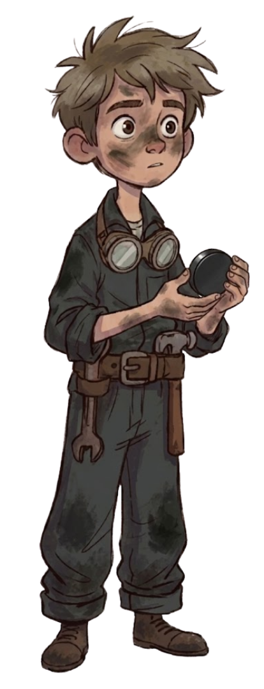

Kai es una tortuga terrestre de 12 años con mimetismo místico. En un ecosistema destruido, sus ojos cian brillan como la última esperanza. Debe aprender a dejar de esconderse para confiar en Ren.

Guardián
REN
Joven de 12 años que trabaja como aprendiz de mantenimiento en la cantera. Su curiosidad lo lleva a convertirse en el guardián de Kai, enfrentando un conflicto interno por protegerla de la maquinaria.